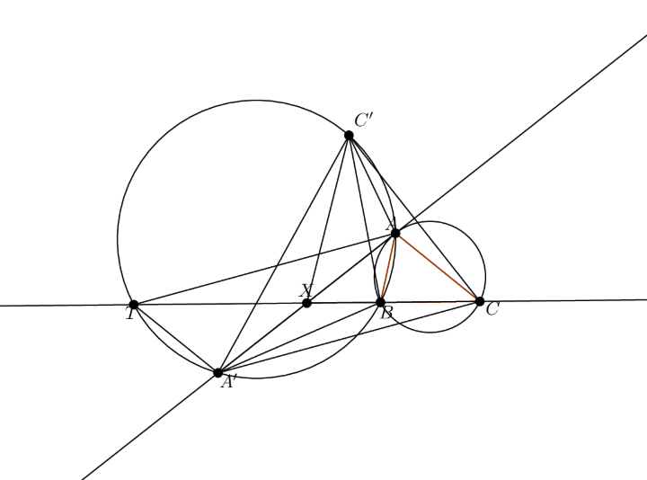

Problem
Let $ABC$ be a triangle. The tangent in $A$ of the circumcircle of $ABC$ cuts the line $(BC)$ in $X$. Let $A'$ be the symmetric of $A$ by $X$ and $C'$ the symmetric of $C$ by the line $(AX)$ Prove that the points $A, C', A'$ and $B$ are concyclic.
Solution
This was a cool problem from the Moroccan TST 2019. Anywho, here's my solution to it(sorry for bad asy :P).

We let $T$ be the reflection of $C$ through $X$ so that $ACA'T$ is a parallelogram. We see it suffices to show $\angle A'C'B = \angle A'AB = \angle C$.
Note line $A'A$ is perpendicular to $CC'$ so we have $\angle A'CA = \angle A'C'A \Rightarrow \angle AC'B+ \angle BC'A = \angle ACT + \angle C $ so all that's left to do this show $\angle BC'A = \angle ACT = \angle ATX$
We see $\triangle C'AX \sim \triangle AXB$ and from some length chasing we also get $\triangle C'AB \sim \triangle CXT$ which basically does it as now we have $\angle BC'A = \angle ATX$ directly. :D